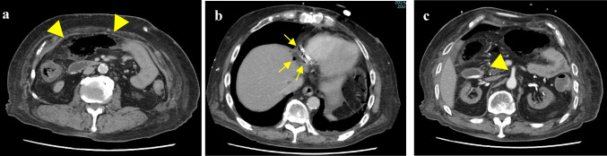

Ficha del catálogo
Isquemia mesentérica aguda
- Sistema
- Digestivo
- Modalidad
- TC
- Región
- Intestino y vasos mesentéricos
- Dificultad
- Avanzado
Es la interrupción o la reducción crítica del flujo sanguíneo intestinal, con necrosis de la pared si no se restablece a tiempo. Sus mecanismos son la embolia arterial, la trombosis arterial sobre placa ateromatosa, la trombosis venosa mesentérica y la isquemia no oclusiva por bajo gasto o vasoconstricción. La mortalidad es alta y depende directamente de la rapidez del diagnóstico.
Técnica
La angiotomografía es el estudio de elección. Se realiza con adquisición sin contraste seguida de fase arterial y fase venosa portal, sin contraste oral positivo, porque este oculta el realce de la pared intestinal. Los cortes finos y las reconstrucciones multiplanares y de proyección de máxima intensidad son indispensables para seguir el tronco celiaco, la arteria mesentérica superior y el eje venoso.
Qué observar
- Defecto de repleción en la arteria mesentérica superior o en la vena mesentérica superior
- Grado de realce de la pared intestinal, tanto su ausencia como el realce excesivo por reperfusión
- Grosor de la pared, que puede estar adelgazada en papel o engrosada por edema y hemorragia
- Neumatosis intestinal y gas en el sistema venoso portomesentérico
- Dilatación de asas con contenido líquido y ausencia de peristalsis
- Trabeculación mesentérica, líquido libre y calcificaciones ateromatosas en el origen de los vasos
Hallazgos
En la oclusión arterial embólica el defecto suele situarse a pocos centímetros del origen de la arteria mesentérica superior y respeta las primeras ramas yeyunales, mientras que la trombosis sobre placa afecta el ostium con calcificación asociada. La pared aparece adelgazada y sin realce, con asas dilatadas y llenas de líquido. En la trombosis venosa el vaso está expandido con centro hipodenso y anillo periférico realzante, y la pared intestinal se engrosa de forma marcada con edema mesentérico y ascitis. La neumatosis y el gas portal traducen enfermedad avanzada, aunque no siempre implican necrosis transmural irreversible.
Perlas
El dato más constante en la fase precoz es la discordancia entre un dolor abdominal intenso y una exploración física pobre, con una tomografía que puede parecer casi normal. Por eso, ante esa sospecha, la lectura debe centrarse en los vasos antes que en las asas. Revisar la fase sin contraste ayuda a no confundir un trombo con un artefacto y a reconocer la hemorragia intramural hiperdensa.
Diagnóstico diferencial
- Colitis isquémica de origen no oclusivo
- Afecta segmentos colónicos de zonas de transición vascular con vasos permeables y curso más benigno.
- Enteritis infecciosa o inflamatoria
- Engrosamiento con estratificación y realce mucoso conservado, sin defectos vasculares.
- Obstrucción en asa cerrada
- Configuración anómala de las asas con dos puntos de transición, aunque puede evolucionar a isquemia.
- Vasculitis mesentérica
- Afectación de vasos de pequeño calibre, engrosamiento parietal segmentario y contexto sistémico.
- Pancreatitis aguda grave
- El foco inflamatorio es pancreático, con enzimas elevadas y realce glandular alterado.
Simuladores
- Asas colapsadas con realce mucoso llamativo, que aparentan hiperemia patológica
- Neumatosis benigna en pacientes con enfermedad pulmonar crónica o tras endoscopia
- Artefacto de endurecimiento del haz que simula un defecto de repleción vascular
Por modalidad
- TC
- Es el método de elección, valora el árbol vascular y la pared intestinal en un solo estudio y permite planear la terapia
- RX
- Poco sensible y sirve sobre todo para descartar otras causas, aunque puede mostrar asas dilatadas y neumatosis avanzada
- US
- El Doppler evalúa el flujo en los troncos proximales pero el gas intestinal limita mucho su rendimiento
Protocolo
Adquisición sin contraste, fase arterial a los 25 a 35 segundos y fase venosa portal a los 60 a 75 segundos tras el medio de contraste intravenoso a flujo alto. Se emplea agua o ningún contraste oral y cortes de 1 mm con reconstrucciones coronales, sagitales y de máxima intensidad. La ventana de pulmón es obligatoria para buscar neumatosis y gas portal.
Clasificación
Errores frecuentes
- Administrar contraste oral positivo y perder la valoración del realce parietal
- Limitarse a la fase portal y no detectar una oclusión arterial proximal
- Descartar el diagnóstico porque las asas se ven normales, sin haber revisado con cuidado los vasos mesentéricos

isquemia mesenterica arteria mesenterica superior trombosis venosa mesenterica neumatosis gas portal angiotomografia abdomen agudo